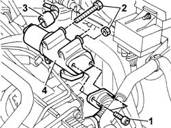

1080C74 E.G.R. - ELECTRICAL VALVE R.R.
- Path
- Procedures > 10 ENGINE > 1080 EXHAUST EMISSION CONTROL SYSTEM > 1080C exhaust gas recirculation system (e.g.r.) > 1080C74 E.G.R. - ELECTRICAL VALVE R.R.
- Kind
- repair procedure (removal / refitting; the operation number is the code)
- Applies to
- engines: 1.9 JTD 8V; all production periods
- Interactive page
- https://sloeber94.github.io/elrnDB-a147/en/#/3025067
Applies to: engines: 1.9 JTD 8V; all production periods
 Removing
Removing
 Refitting
Refitting1016A10 sound-proofing cover - r + r
Disconnect the battery negative terminal.
1. Undo the bolts securing the expansion joint to the EGr electrical valve.
2. Undo the botls and nut securing the EGR electrical valve to the intake manifold.
3. Disconnect the EGR valve actuator electrical connection.
 | Name | Connector |
|---|---|---|
3 | EGR solenoid |
4. Remove the EGR electrical valve from the engine bay.

Applies to: engines: 1.9 JTD 8V; all production periods
Refitting
RemovingFit the EGR electrical valve to its seat on the intake manifold.
Tighten the retaining nut and bolts to torque.
 | Fastening | Component | Ø | Value (daNm) |
|---|---|---|---|---|
- | - | - | - | - |
| Fastening | Component | Ø | Value (daNm) |
|---|---|---|---|---|
- | - | - | - | - |
Connect the EGR valve actuator electrical connection.
| Name | Connector |
|---|---|---|
- | EGR solenoid |
Tighten the bolts securing the expansion joint to the EGR electrical valve to torque.
| Fastening | Component | Ø | Value (daNm) |
|---|---|---|---|---|
- | - | - | - | - |
1016A10 sound-proofing cover - r + r
Connect the battery negative terminal.